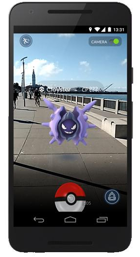
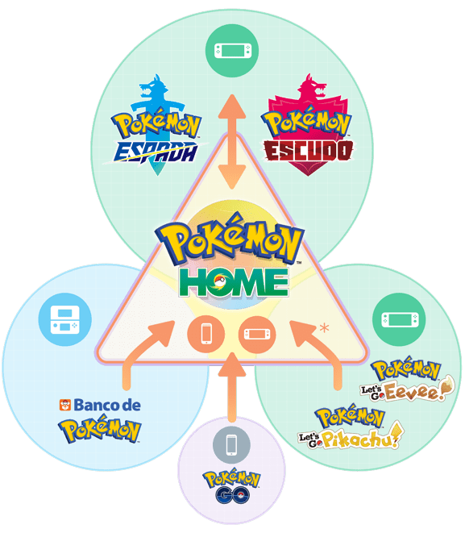

El Juego
Se trata de una adaptación del espíritu de los videojuegos RPG que hemos conocido en las consolas de Nintendo, es una experiencia similar pero trasladada a dispositivos móviles.
El juego consiste en buscar y capturar personajes de la saga Pokémon escondidos en ubicaciones del mundo real y luchar con ellos, lo que implica desplazarse físicamente por las calles de la ciudad para progresar. La aplicación comporta un elemento de interacción social, ya que promueve reuniones físicas de los usuarios en distintas ubicaciones de sus poblaciones y bosques entre otros.
El juego se lanzó en Argentina el 3 de agosto de 2016
El juego usa nuestra localización en tiempo real por medio de la red GPS para posicionarnos en nuestro entorno físico. Por lo tanto, como requisito para jugar a Pokémon Go hace falta estar conectado a Internet, ya sea mediante una red Wi-Fi o usando nuestra conexión de datos.
Siguiendo con la idea de realidad aumentada que implementa este juego, al encender la cámara del celular se podrá visualizar la imagen virtual de un pokémon sobrepuesta en la escena real. Estas características del vídeojuego lo clasifican como realidad aumentada, ya que mezcla elementos reales con ficticios con la intermediación del teléfono celular.
Este juego cuenta con otros elementos y objetos que sirven para el entrenamiento de los pokémon. Para hacer evolucionar a los pokémon se necesitan caramelos. Estos caramelos se consiguen atrapando pokémons, gracias a huevos de pokémon o por transferencia. Además de los caramelos, el polvo estelar también sirve para hacer evolucionar a los pokémon.
El servicio Pokemon HOME fue anunciado el año pasado, antes de su lanzamiento en febrero de 2020. Permite a los jugadores transferir su Pokemon a través de diferentes títulos mediante el uso de una práctica aplicación. Se diseñó teniendo en cuenta el Nintendo Switch y salió a la venta unos meses después de Pokemon Sword and Shield.
En un principio, los jugadores que tuvieran Pokemon Sword y/o Shield y Pokemon Let’s Go Pikachu y/o Eevee, podrían transferir libremente su Pokemon entre los dos juegos, lo que les ayudaría a completar su ‘Dex’ y a mover su Pokemon de competición entre los juegos. Sin embargo, eso dejaba a los jugadores de Pokemon GO sin acceso. Eso era hasta ahora.
A partir del 11 de noviembre de 2020, los jugadores de Pokemon GO que estén en el nivel máximo, 40, podrán transferir el Pokemon que hayan capturado a Pokemon HOME y luego a Sword o Shield desde allí. Hay algunas advertencias con eso, sin embargo, algunas que incluyen cargos extras.
Los jugadores tendrán que usar el “Transportador de Pokemon” en Pokemon GO para mover su Pokemon a HOME. Este ítem solo tiene una cierta cantidad de “energía”, sin embargo, que se agota con cada Pokemon transferido. La cantidad de energía que se utiliza depende del tipo de Pokemon y de si es brillante, legendario, mítico o no.